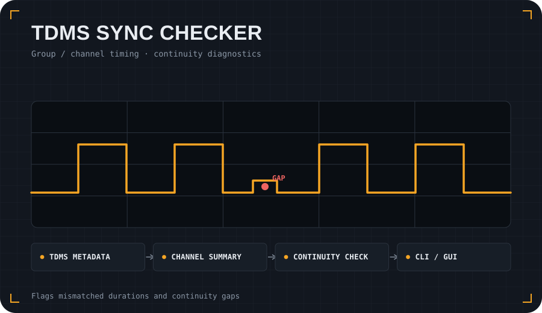
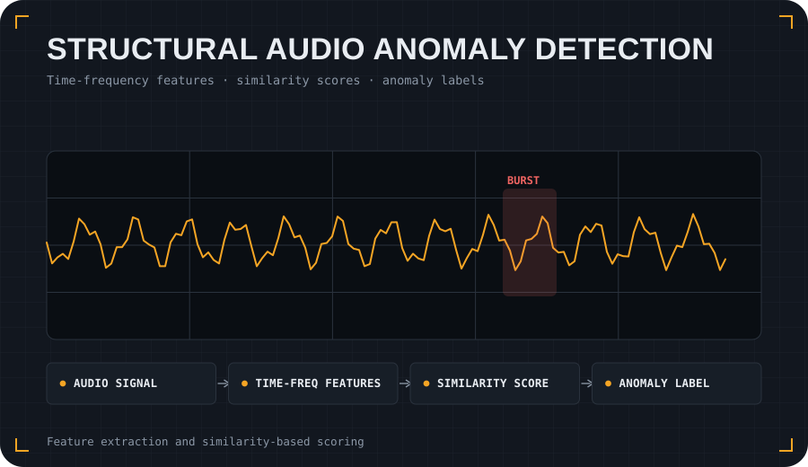

Hydraulic Digital Twin
Synthetic, confidentiality-safe workflow for generating hydraulic sensor data, validating signals, detecting anomalies, classifying operating states and producing reports.
I build research-software and machine-learning workflows that connect sensor data, simulation and domain knowledge to monitor, validate and understand complex physical systems.
Four public repositories that show the main shape of my applied-AI and research-software work.
Synthetic, confidentiality-safe workflow for generating hydraulic sensor data, validating signals, detecting anomalies, classifying operating states and producing reports.

Metadata-first QA/QC tool for engineering TDMS files, including timing checks, group/channel synchronisation diagnostics and split-file continuity review.

Audio and signal-processing workflow for structural-test monitoring using time-frequency features, latent representations and anomaly-scoring methods.

Scientific Python implementation of a reduced morphodynamic model for river-centreline evolution, with reproducible examples and GUI/CLI workflows.
I try to make repositories useful as engineering artefacts, not only as code. Where possible, projects include a clear problem statement, quick-start instructions, example data or synthetic data, visual outputs and assumptions.
This portfolio emphasises reproducible workflows and honest boundaries around data, models and confidentiality.
I am interested in applied AI, research software, digital twins, anomaly detection and engineering-data workflows.